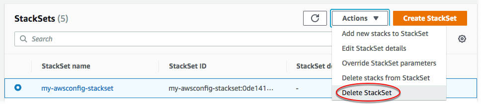

删除堆栈集
在您完成 AWS CloudFormation StackSets 入门演练后，您可以按照此部分中的过程删除您在本演练中创建的堆栈集和其他资源。要删除堆栈集，您必须先删除堆栈集中的所有堆栈实例。有关如何删除所有堆栈实例的信息，请参阅 从堆栈集中删除堆栈实例。
使用 AWS Management Console删除堆栈集
-
在StackSets（堆栈集）页面上，选择您在 创建堆栈集 中创建的堆栈集。在本演练中，我们创建了名为
my-awsconfig-stackset的堆栈集。 -
选定堆栈集后，从 Actions（操作）菜单中选择 Delete StackSet（删除堆栈集）。
 -
当系统提示您确认是否要删除堆栈集时，选择 Delete StackSet (删除堆栈集)。
使用 AWS CLI删除堆栈集
担任委托管理员时，您必须在每次运行 StackSets 命令时将 --call-as 参数设置为 DELEGATED_ADMIN。
--call-asDELEGATED_ADMIN
-
运行以下命令。在提示您确认时，键入
y，然后按 Enter。aws cloudformation delete-stack-set --stack-set-name my-awsconfig-stackset -
通过运行
list-stack-sets命令验证是否已删除堆栈集。list-stack-sets 命令的结果应显示状态为DELETED的堆栈。aws cloudformation list-stack-sets
删除服务角色 (可选)
删除 StackSets 创建堆栈集需要的服务角色。
对于自行管理的堆栈集，您在完成本指南中演练时，在完成 堆栈集操作的先决条件 的过程中创建的角色在管理员账户中命名为 AWSCloudFormationStackSetAdministrationRole，而在每个目标账户中命名为 AwsCloudFormationStackSetExecutionRole。
对于服务托管的堆栈集，作为本指南中演练的 堆栈集操作的先决条件 的一部分，由 StackSets 自动创建的角色在组织管理账户中后缀为 CloudFormationStackSetsOrgAdmin，而在每个目标账户中为 CloudFormationStackSetsOrgMember。
有关删除角色的更多信息，请参阅《IAM 用户指南》中的删除角色和实例配置文件。
使用 AWS Management Console删除服务角色
登录 AWS Management Console，然后使用以下网址打开 IAM 控制台：https://console.aws.amazon.com/iam/
。 -
在导航窗格中，选择 Roles，然后选中要删除的角色旁的复选框。
-
在页面顶部的 Role actions 菜单中，选择 Delete role。
-
在确认对话框中，选择 Yes, Delete（是的，删除）。如果确定，您就可以继续执行删除操作，即使仍在加载上次访问服务数据。
使用 AWS CLI删除服务角色
-
运行以下命令。在提示您确认时，键入
y，然后按 Enter。aws iam delete-role --role-namerole name